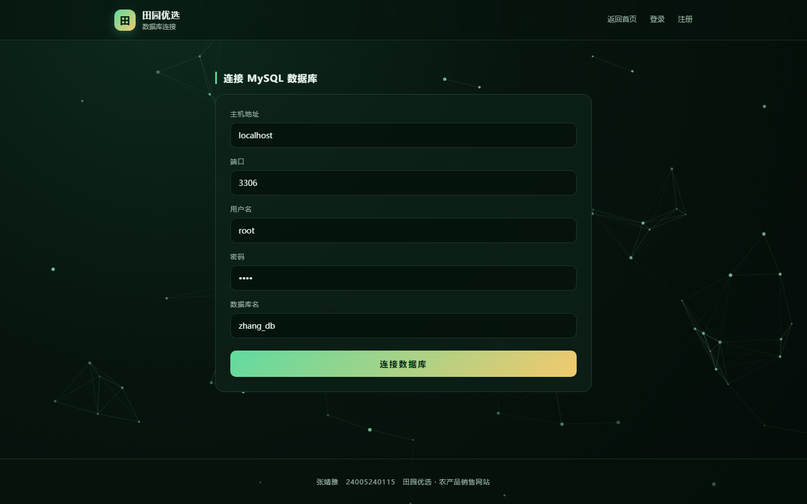
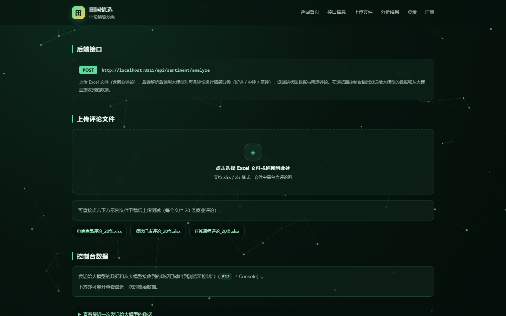
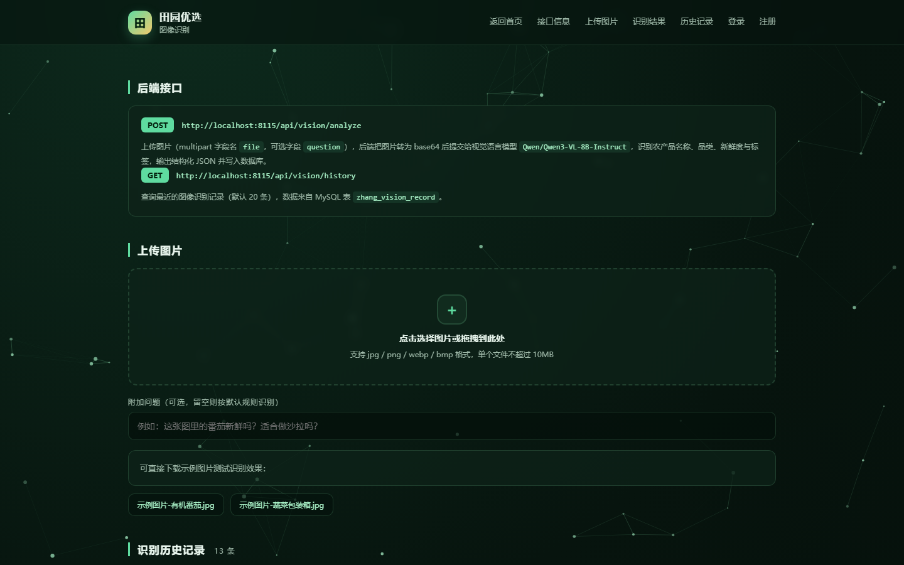
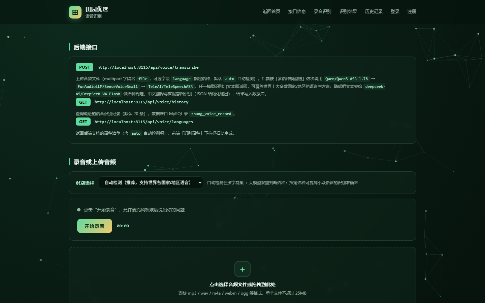
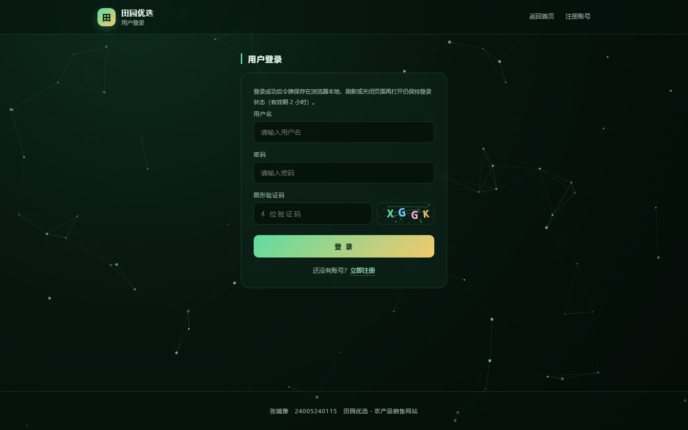
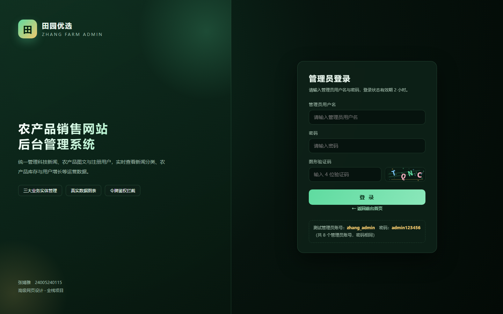

高级网页设计 · 全栈项目
张婧雅 24005240115
本页为 Trae 一键部署的线上静态演示版，仅包含不依赖后台接口的页面：个人简历与 15 份接口页面说明文档；使用后台接口的页面不推送到服务器，需在本地启动服务后访问。
2纯静态页面
15接口页面说明文档
17线上可访问页面
RESUME
张
前端开发（实习）
AI 应用开发（初级）
AI 应用开发（初级）
重点推荐
个人简历 · 前端开发工程师（实习）
根据 Word 简历整理的大学生求职简历，包含个人概述、教育背景、专业技能、AI 工具使用、项目经历与实践荣誉共 7 个模块；页面配有 Canvas 粒子背景动画与滚动入场效果，并支持一键打印 / 保存 PDF。
- 7内容模块
- Canvas背景动画
- PDF打印导出
纯前端页面
不依赖后端接口，静态文件即可完整运行；依赖后台接口的页面不在本次线上部署范围内。
后台接口页面说明
每个使用后端接口的页面都配有一份独立说明文档，包含页面截图、功能要点与接口清单。
前台功能说明 · 11 个页面

01 数据库连接 database.html 输入账号密码连接 MySQL，展示连接结果与连接信息。 02
科技新闻列表
news.html
新闻列表展示，支持关键词搜索、分类筛选与分页。
02
科技新闻列表
news.html
新闻列表展示，支持关键词搜索、分类筛选与分页。
 03
农产品图文列表
produce.html
农产品图文卡片列表，支持搜索、分类与分页浏览。
03
农产品图文列表
produce.html
农产品图文卡片列表，支持搜索、分类与分页浏览。
 04
AI 智能聊天
chat.html
与大模型多轮对话，支持流式输出与会话管理。
04
AI 智能聊天
chat.html
与大模型多轮对话，支持流式输出与会话管理。
 05
知识库管理
knowledge.html
上传文档构建知识库，基于检索增强生成回答问题。
05
知识库管理
knowledge.html
上传文档构建知识库，基于检索增强生成回答问题。

06 商业评论情感分类 sentiment.html 输入评论完成情感倾向分类，展示结果与置信度。
07 图像识别 vision.html 上传图片进行识别，展示标签结果与识别历史。
08 语音识别 voice.html 上传语音识别为文字，支持语言选择与历史记录。
09 用户登录 login.html 账号、密码与图形验证码登录，成功后保存登录态。 10
用户注册
register.html
注册新用户，校验用户名、密码、昵称与邮箱。
10
用户注册
register.html
注册新用户，校验用户名、密码、昵称与邮箱。

11 管理员登录 admin/login.html 管理员账号与验证码登录后台，返回 JWT 令牌。